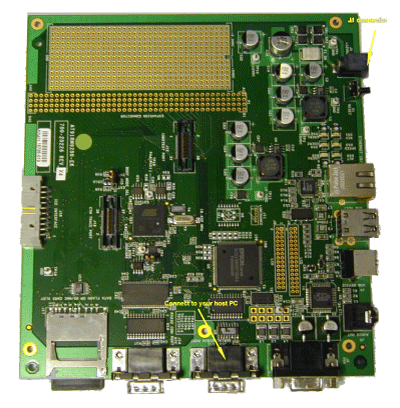
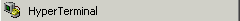
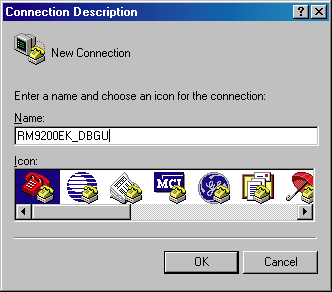
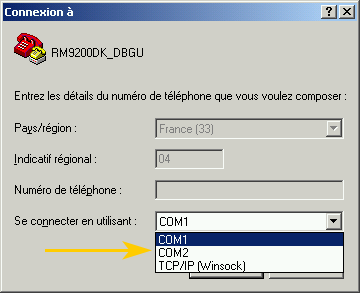
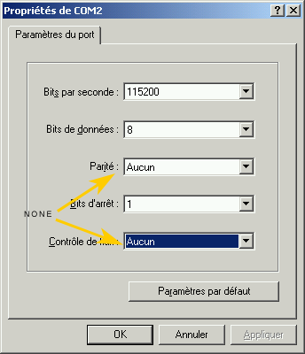
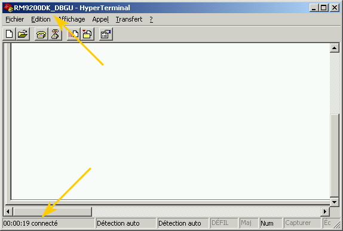
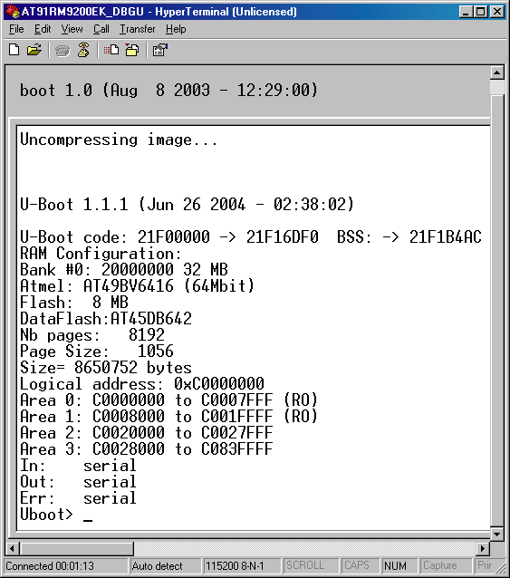

Connect
the Evaluation Kit to your Host PC
- By using the serial cable
and the ethernet cross cable , supplied in the AT91RM9200-EK Evaluation Kit,
connect the board to your PC as shown below:

- Jumper J15 on EXT position
- Power-up the Evaluation
Kit through the J1 connector,
- Start the HyperTerminal
application:,
- The connection can be
called RM9200_DBGU, for example. Valid by using the "OK" button

- From the "Connection
to" window, select the COM port used and valid by using the "OK"
button

- Set the serial parameters
as described below:
- Bit rate @115 kbps,
- Data bit @8-bit,
- Parity NONE,
- Stop bit equal to
1,
- Flux control NONE

- The AT91RM9200-DK and
your PC are connected now,

- Press the Reset button
on the RM9200-EK board,
- See the message send
from the board to the HyperTerminal console (Remark: This message can change
according to the "u-boot" version),
